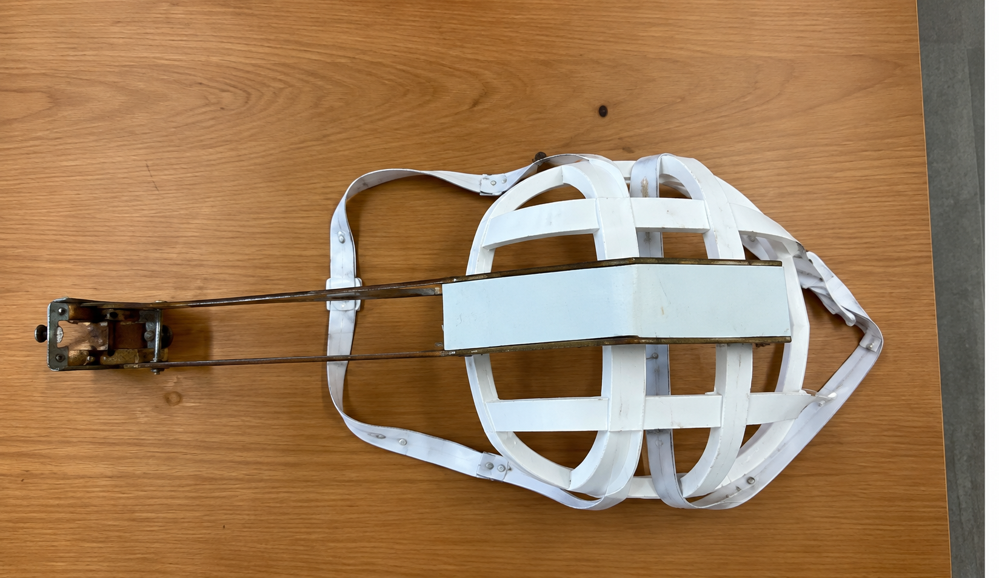

IRIS
← Back to My Work01The starting point
At the 鼎石 EniacXI hackathon in 2025, I worked on software to support communication for people with late-stage ALS.
02The idea
Use eye-based interaction to let users communicate their needs. IRIS combines Apple’s built-in eye tracking with an interaction based on gaze duration and blinking.
03How it works
IRIS uses Apple’s built-in eye tracking, with gaze duration and blinking used to interpret the user’s intended selection. In the current version, it can communicate the wrong information or fail to recognize the intended input.

04My contribution
I designed all software parts of IRIS and used Codex to help create the implementation. I identified interface issues, including the settings button overlapping another button. The deadline left too little time for complete debugging.
05Why I selected it
This was my first attempt at this kind of project. It taught me how to design a project from scratch, and it is among my more complete projects so far.
06Where it stands
The software was built, but logic problems and other bugs remained. Eye-based input could be misinterpreted or go unrecognized, and overlapping controls still needed attention.